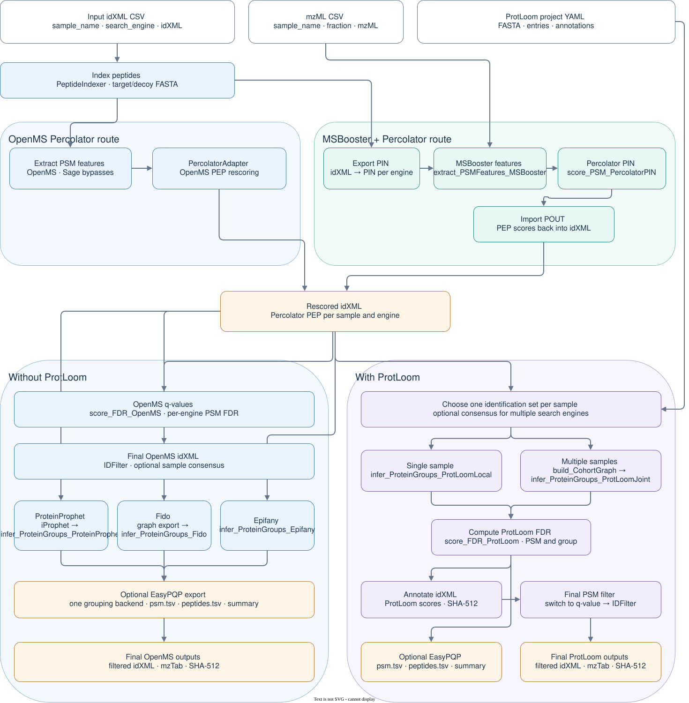

PSM validation
Percolator rescores candidate PSMs, and OpenMS estimates q-values and filters the identifications. The default route uses OpenMS PercolatorAdapter; MSBooster can add predicted-property features before rescoring.

Open the original flowchart at full size.

How it works
- Check peptide-to-protein associations and target/decoy labels against the shared FASTA.
- Extract PSM features and run Percolator using the selected
openmsormsboosterroute. - Estimate sample-level PSM q-values and filter at
0.01by default. - When multiple search engines are selected, combine their evidence with ConsensusID. Fractionated input is handled automatically.
- Supply accepted identifications to peptide quantitation and unfiltered PEP-scored identifications to the later protein grouping step.
Inputs and outputs
SpectroMesa-DDA generates the search-result and mzML manifests and provides the shared FASTA. Outputs include per-engine filtered idXML, optional multi-engine consensus idXML, unfiltered PEP-scored idXML, and PSM-feature files used by QC.
Protein grouping for this DDA workflow happens after LFQ or TMT quantitation. The standalone validation pipeline's library-generation routes are not used here.
Keep Percolator enabled for ProteinProphet
run_percolator already defaults to true. ProteinProphet requires its PEP-scored identification files. The filter_psm_score_peptide setting is passed as a PSM score threshold, despite its historical name; with default q-value scoring, 0.01 means a 1% PSM threshold.
Parameter reference
Use the validate_ProteomicPSM block inside params. Defaults below describe this step as launched by SpectroMesa-DDA. “Not set; tool default” means no override is passed. Automatically supplied values do not need to be repeated.
Analysis settings
| Parameter | Type | Default / supplied value | Meaning |
|---|---|---|---|
consensusid_algorithm |
Text | Not set; tool default | ConsensusID scoring algorithm. When unset, selects PEPMatrix with Percolator and ranks without it. |
enzyme |
Text | Trypsin | OpenMS digestion-enzyme name for validation. Keep its cleavage rule consistent with the search settings. |
fdr_algorithm_no_qvalues |
Boolean | false | Use raw FDR estimates instead of q-values. Leave false for the documented q-value thresholds. |
filter_psm_blacklist_peptides |
Path | Not supplied | Optional idXML defining peptide sequences to remove. |
filter_psm_blacklist_proteins |
Path | Not supplied | Optional FASTA defining proteins whose matching peptides should be removed. |
filter_psm_delete_unreferenced_peptide_hits |
Boolean | true | Remove peptide hits that no longer refer to a retained protein. |
filter_psm_in_silico_digestion |
Path | Not supplied | Optional FASTA for filtering peptide hits against an in-silico digest. |
filter_psm_keep_unreferenced_protein_hits |
Boolean | false | Retain protein hits with no remaining peptide evidence in the filtered output. |
filter_psm_remove_decoys |
Boolean | true | Remove decoy identifications from the filtered output. |
filter_psm_score_peptide |
Number | 0.01 | Maximum PSM q-value for the filtered identification output with the default q-value scoring. Despite its name, this is passed to IDFilter as -score:psm. |
filter_psm_whitelist_peptides |
Path | Not supplied | Optional idXML defining peptide sequences to retain. |
filter_psm_whitelist_proteins |
Path | Not supplied | Optional FASTA defining proteins whose matching peptides may be retained. |
merge_consensus |
Boolean | false; true automatically for multiple engines | Combine search-engine results with ConsensusID. Automatically enabled when more than one engine is selected. |
msbooster_params |
Path | Bundled msbooster.params | MSBooster prediction configuration. The bundled file uses DIA-NN predictions to add features for rescoring. |
percolator_post_processing_tdc |
Boolean | true | Use target-decoy competition in the OpenMS Percolator route. |
percolator_workflow |
Text | openms | Rescoring route: openms uses PercolatorAdapter; msbooster adds predicted-property features before Percolator. |
run_percolator |
Boolean | true | Rescore PSMs with Percolator. Already enabled; keep true for ProteinProphet, which needs PEP-scored identifications. |
save_intermediate_files |
Boolean | false | Publish additional intermediate files for inspection. Final outputs and execution logs are retained independently. |
skip_peptide_indexing |
Boolean | false | Skip matching peptides to the FASTA. Leave false so protein associations and target/decoy labels are checked. |
Software and containers
| Parameter | Type | Default / supplied value | Meaning |
|---|---|---|---|
docker_image_fragpipe |
Text | fcyucn/fragpipe:24.0 | FragPipe image containing MSBooster, DIA-NN, and Percolator. |
docker_image_openms |
Text | ghcr.io/theboutroslab/openms-thirdparty:3.5.0 | Container image for openms. Change only to a compatible image. |
docker_image_pyopenms |
Text | ghcr.io/theboutroslab/pyopenms:3.5.0 | Container image for pyopenms. Change only to a compatible image. |
fragpipe_version |
Text | 24.0 | FragPipe image version, default 24.0. |
openms_version |
Text | 3.5.0 | Version used for output labeling and default container selection. |
pyopenms_version |
Text | 3.5.0 | Version used for output labeling and default container selection. |
Automatically supplied settings
| Parameter | Type | Default / supplied value | Meaning |
|---|---|---|---|
dataset_id |
Text | Shared dataset_id | Analysis name used to organize and name outputs. |
decoy_database |
Path | Shared decoy_database | Target-decoy FASTA used for peptide indexing. |
decoy_string |
Text | Shared decoy_string | Accession prefix identifying decoy proteins in the search database. |
decoy_string_position |
Text | Shared decoy_position | Location of the decoy marker; use the shared decoy_position setting. |
fractionated |
Boolean | Detected from the acquisition CSV | Process corresponding acquisition fractions. Set automatically from the input CSV. |
input_csv |
Path | Generated search-result manifest | CSV containing sample_name, search_engine, and idXML columns. |
input_mzml_csv |
Path | Generated mzML manifest | CSV containing sample_name, fraction, and mzML columns; required for MSBooster or EasyPQP export. |
output_dir |
Path | Assigned within the analysis output | Destination for this step. Set the shared output_dir for the complete analysis. |
Additional index peptides settings
| Parameter | Type | Default / supplied value | Meaning |
|---|---|---|---|
allow_nterm_protein_cleavage |
Text | Not set; tool default | Permit protein N-terminal cleavage during peptide indexing; passed to PeptideIndexer. |
index_peptides_IL_equivalent |
Boolean | Not set; tool default | Treat the isobaric amino acids isoleucine ('I') and leucine ('L') as equivalent (indistinguishable). Also occurrences of 'J' will be treated as 'I' thus avoiding ambiguous matching. |
index_peptides_aaa_max |
Number | Not set; tool default | Maximum ambiguous amino acids allowed when matching peptides to the FASTA. Already 0 in SpectroMesa-DDA. |
index_peptides_enzyme_specifity |
Text | Not set; tool default | Required enzyme specificity during peptide-to-protein matching. The spelling of this setting follows the pipeline option name. |
index_peptides_keep_unreferenced_proteins |
Boolean | Not set; tool default | If set, protein hits which are not referenced by any peptide are kept. |
index_peptides_mismatches_max |
Number | Not set; tool default | Maximum amino-acid mismatches allowed during peptide-to-protein matching. Increasing this can substantially increase runtime. |
index_peptides_missing_decoy_action |
Text | Not set; tool default | Action when no decoy assignments are found: error, warn, or silent. Investigate the database and marker if this occurs. |
index_peptides_unmatched_action |
Text | Not set; tool default | Action for peptides that cannot be matched to the FASTA: error, warn, or remove. SpectroMesa-DDA already selects remove. |
index_peptides_write_protein_description |
Boolean | Not set; tool default | If set, the protein description is stored as well. |
index_peptides_write_protein_sequence |
Boolean | Not set; tool default | If set, the protein sequences are stored as well. |
Additional aggregate consensus id settings
| Parameter | Type | Default / supplied value | Meaning |
|---|---|---|---|
consensusid_considered_hits |
Number | Not set; tool default | The number of top hits in each ID run that are considered for consensus scoring ('0' for all hits). |
consensusid_count_empty |
Boolean | Not set; tool default | Count empty ID runs (i.e. those containing no peptide hit for the current spectrum) when calculating 'min_support'? |
consensusid_keep_old_scores |
Boolean | Not set; tool default | If set, keeps the original scores as user params |
consensusid_min_support |
Number | Not set; tool default | For each peptide hit from an ID run, the fraction of other ID runs that must support that hit (otherwise it is removed). |
consensusid_mz_delta |
Number | Not set; tool default | [idXML input only] Maximum allowed precursor m/z deviation between identifications belonging to the same spectrum. |
consensusid_rt_delta |
Number | Not set; tool default | [idXML input only] Maximum allowed retention time deviation between identifications belonging to the same spectrum. |
Additional score FDR OpenMS settings
| Parameter | Type | Default / supplied value | Meaning |
|---|---|---|---|
fdr_algorithm_conservative |
Text | Not set; tool default | Select the conservative target-decoy FDR calculation. This value-taking option uses the text true or false. |
fdr_algorithm_split_charge_variants |
Boolean | Not set; tool default | If 'true' charge variants are treated separately (for peptides of combined target/decoy searches only). |
fdr_algorithm_treat_runs_separately |
Boolean | Not set; tool default | If 'true' different search runs are treated separately (for peptides of combined target/decoy searches only). |
fdr_algorithm_use_all_hits |
Boolean | Not set; tool default | If 'true' not only the first hit, but all are used (peptides only) |
Additional filter PSM settings
| Parameter | Type | Default / supplied value | Meaning |
|---|---|---|---|
filter_psm_best_n_peptide_hits |
Text | Not set; tool default | Keep at most this many peptide hits per spectrum; 0 leaves this limit disabled. |
filter_psm_best_n_protein_hits |
Text | Not set; tool default | Keep at most this many protein hits; 0 leaves this limit disabled. |
filter_psm_best_n_spectra |
Text | Not set; tool default | Keep the specified number of best-scoring spectra; 0 leaves this limit disabled. |
filter_psm_best_strict |
Boolean | Not set; tool default | Keep only the highest-scoring peptide hit. |
filter_psm_blacklist_ignore_modifications |
Text | Not set; tool default | Compare blacklist peptides by sequence alone. This value-taking option uses the text true or false. |
filter_psm_blacklist_modifications |
Text | Not set; tool default | Space-separated OpenMS modification names; remove peptides containing any selected modification. |
filter_psm_blacklist_protein_accessions |
Text | Not set; tool default | Space-separated protein accessions; remove peptide hits referencing any listed accession. |
filter_psm_number_of_missed_cleavages |
Text | Not set; tool default | Allowed missed-cleavage range for IDFilter, using the configured validation enzyme. |
filter_psm_precursor_charge |
Text | Not set; tool default | Retain PSMs within a precursor-charge range, written as min:max. |
filter_psm_precursor_length |
Text | Not set; tool default | Retain peptides within a sequence-length range, written as min:max. |
filter_psm_precursor_mz |
Text | Not set; tool default | Retain PSMs within a precursor m/z range, written as min:max. |
filter_psm_precursor_rt |
Text | Not set; tool default | Retain PSMs within a retention-time range, written as min:max in seconds; either bound may be omitted. |
filter_psm_remove_shared_peptides |
Boolean | Not set; tool default | Retain only peptides matching one protein accession; separate isoforms count as separate proteins. |
filter_psm_var_mods |
Boolean | Not set; tool default | Retain only peptide hits with a variable modification recorded in the search parameters. |
filter_psm_whitelist_ignore_modifications |
Text | Not set; tool default | Compare whitelist peptides by sequence alone. This value-taking option uses the text true or false. |
filter_psm_whitelist_modifications |
Text | Not set; tool default | Space-separated OpenMS modification names; retain peptides containing at least one selected modification. |
filter_psm_whitelist_protein_accessions |
Text | Not set; tool default | Space-separated protein accessions; retain peptide hits referencing at least one listed accession. |
Additional score PEP percolator settings
| Parameter | Type | Default / supplied value | Meaning |
|---|---|---|---|
percolator_decoy_pattern |
Text | Not set; tool default | Decoy accession pattern for the standalone OpenMS PercolatorAdapter route. |
percolator_peptide_level_fdrs |
Boolean | Not set; tool default | Calculate peptide-level FDRs in the standalone OpenMS PercolatorAdapter route. |
percolator_protein_level_fdrs |
Boolean | Not set; tool default | Calculate protein-level FDRs in the standalone OpenMS PercolatorAdapter route. |
Tool defaults
The additional option tables list parameters explicitly forwarded by the pipeline's OpenMS modules. Unset valued options use the tool's defaults; flags are added only when true. Check the configured tool's -helphelp for accepted values and interactions. Avoid overriding export formatting or generated input/output options that the next analysis step relies on.
Computing and temporary files
The shared parameter reference explains these settings. This pipeline declares: base_resource_update, max_cpus, max_memory, min_cpus, min_memory, resource_allocation_profile_tag, ucla_cds, work_dir.
The tables were checked against the individual pipeline configuration, its tool modules, and the SpectroMesa-DDA settings that select this workflow.
Related steps
Overview · Shared parameters · Configuring an analysis · Understanding results